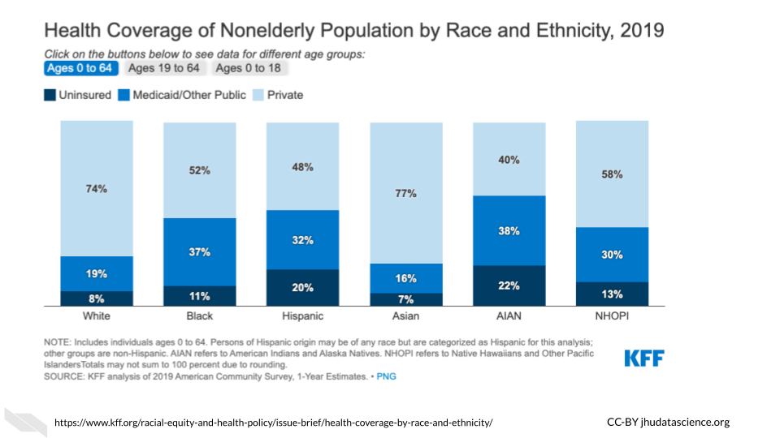
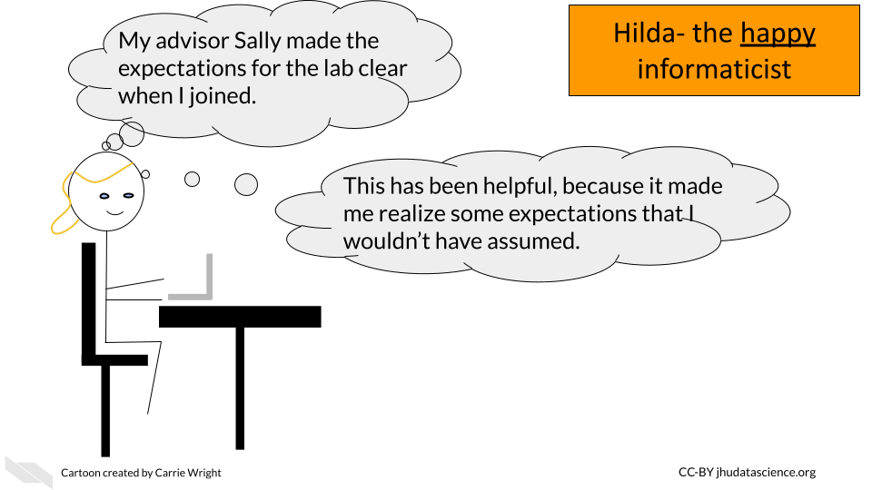

Chapter 5 Promoting diversity
Know why diversity has been shown to be beneficial 2)Recognition about how certain groups are underrepresented in computational biology both as research participants and researchers 3)Research strategies to better support health equity 4) Know management strategies to better support a more diverse team of employees, mentees, and collaborators")
5.1 Diversity is beneficial
Beyond the critical importance of giving everyone more fair opportunities (which cannot be overstated), there are many additional crucial reasons why diversity is particularly important for science and health research.
The inclusion of diverse research team members may promote more inclusive research questions and practices to help the populations that need better health care the most.
“Racial/ethnic minority groups in the United States are at disproportionate risk of being uninsured, lacking access to care, and experiencing worse health outcomes from preventable and treatable conditions.”(Jackson and Gracia 2014)
“…Compared with the general population, racial/ethnic minority populations have poorer health outcomes from preventable and treatable diseases, such as cardiovascular disease, cancer, asthma, and human immunodeficiency virus/acquired immunodeficiency syndrome than those in the majority.”(Jackson and Gracia 2014)
“… the social environment in which people live, learn, work, and play contributes to disparities and is among the most important determinants of health throughout the course of life.”(Jackson and Gracia 2014)
More diverse research teams may be more aware of the cultural differences and social determinants that may influence the health of the people that the research could serve. Such consideration could further increase the impact of the research.
The inclusion of diverse populations in scientific teams has also been shown to improve innovation (Hofstra et al. 2020).
“Scholars from underrepresented groups have origins, concerns, and experiences that differ from groups traditionally represented, and their inclusion in academe diversifies scholarly perspectives. In fact, historically underrepresented groups often draw relations between ideas and concepts that have been traditionally missed or ignored.” (Hofstra et al. 2020)
5.2 Underrepresentation in cancer informatics
Despite the benefits of diversity in research teams, analyses of scientific article authorship indicate that women are underrepresented in computational biology (Bonham and Stefan 2017) and biomedical engineering (Aguilar et al. 2019).
Furthermore, analyses of university faculty and students demonstrate that both women and historically marginalized populations (such as certain racial and ethnic groups and LGBTQ+ individuals) remain underrepresented in science, technology, engineering, and mathematics (STEM) fields in the US and in Europe (Hofstra et al. 2020; Chaudhary and Berhe 2020; Cech and Waidzunas 2021). Despite very often facing discrimination and less support, many individuals of these underrepresented groups have greatly contributed to scientific achievement, which demonstrates the potential innovation that could be achieved when research teams are more diverse.
Many Black scientists are responsible for great human achievements that changed the world including:
Katherine Johnson: Katherine Johnson was a mathematician who helped enable humans to venture into space. Katherine worked for NASA in the 1960s during the Space Race. A depiction of her work and some of the discrimination that she faced while working for NASA is featured in the film Hidden figures.
Vivien Thomas: Vivien was a pioneer in heart surgery at Johns Hopkins when it was considered taboo. He is credited for assisting in creating a life saving surgical operation to improve the oxygenation of children with congenital heart defects. This operation was pivotal in paving the way for other heart surgical procedures.
See here for an excellent review of some other world changing Black scientists and here for a list of some current inspiring Black scientist.
Scientists and Mathematicians of Latin American or Hispanic origin have also greatly contributed and continue to contribute to scientific innovation:
- Mario Molina: Mario was born in Mexico and came to the United States for graduate school. He was a chemist and environmental scientist and was awarded the Nobel Prize in Chemistry in 1995 for his work in discovering the environmental impact of chlorofluorocarbon (CFC) gases on the Earth’s ozone layer. This work was critical in changing policies (starting in the 1980s) to protect our environment from these chemicals which were widely used as aerosols, solvents and refrigerants. Through these policies, many countries around the world have banned or greatly reduced the manufacturing of these chemicals. NASA projections suggest that the ozone would have been largely depleted by 2060 if these chemicals were manufactured at previous historical rates. See here for more information on what would have likely happened to the world if CFCs were not banned.
See this podcast episode for more information.
- Ynes Mexia: Ynes began her career as a botanist in her fifties in the 1920s. She traveled widely (often by herself (which was very unusual at the time)) collecting and characterizing plants. She unfortunately passed away at 68 cutting her botany career short to only 13 years. However, in that time she collected over 145,000 specimens and made numerous discoveries. Her legacy in botany had such an impact that a genius is named after her. She is also highly regarded for her efforts in environmental conservation, particularly for helping to preserve the redwood forests in the United States.
This adventurous woman has been quoted for saying:
“I don’t think there’s any place in the world where a woman can’t venture.”
See this video for more information about her inspiring life.
Also check out this list for additional historic scientists and this list for some current inspiring scientists of Hispanic or Latin american ancestry or origin.
5.3 Underrepresentation in clinical trials
Beyond underrepresentation of certain populations within research teams, there is also a lack of representation of various populations in clinical trials (in particular woman and people of specific racial and ethnic groups) (Clark et al. 2019). This is particularity true for cancer clinical trial studies (Nazha et al. 2019). Furthermore there is also limited data collected about LGBTQ+ individuals (Chen et al. 2019).
According to an FDA study in 2018, Black people represented 13.4% of the population, yet only 5% of clinical trial participants, while Hispanics and people of Latin American ancestry made up 18.1% of the population at the time, but less than 1% of clinical trial participants (Coakley et al. 2012).
Furthermore, when looking at oncology trials, whites (80% of participants) and males (59.8% of participants) continue to be overrepresented, according to a study in 2019 (Nazha et al. 2019).
This lack of diversity in clinical trials is a problem because this results in less understanding about how particular patients will fare with a given treatment/vaccine/diagnosis etc. This lack of knowledge can result in furthering inequities in medical care (Clark et al. 2019).
Demographic studies of the United States demonstrate that racial and ethnic populations that have been historically underrepresented in clinical trials and in STEM have grown and are predicted to make up 50% of the population by 2045 (Clark et al. 2019). Thus for medical care to best serve the current and future population of the United States, trials especially need to be more representative of the diverse groups that make up our country.
Research suggests the following reasons for the lack of diversity in clinical trials:
5.3.1 Historical injustice
According to studies, marginalized groups such as Native Americans, people of Hispanic or Latin American ancestry, and Black Americans understandably distrust researchers at higher rates than white individuals due to historical injustices and inadequate medical care. Mastroianni, Faden, and Federman (1999)
African Americans’ suspicions and fears that many sectors of American society are not trustworthy were logical and accurate interpretations of their perceptions and experiences. (Griffith et al. 2020)
Examples of historical injustices include:
Tuskegee syphilis trial: A study in Tuskegee, Alabama about the outcomes of untreated syphilis in Black males (1932-1972) in which the patients were told they were being treated but were in fact not being treated (McVean 2019).
“The Unfortunate experiment”: A study in New Zealand (1966-1987) in which women diagnosed with a precursor to cervical cancer were also similarly studied but patients were not offered standard treatments, they were not informed of their diagnosis, and they were not told that they were a part of a trial, nor given the opportunity to decide if they wanted to be a part of the trial (Evans 2018).
Henrietta Lacks and HeLa Cells: In 1951, a patient named Henrietta Lacks was treated for cervical cancer at Johns Hopkins. Her cancerous cells turned out to be uniquely capable of surviving and reproducing and have been used widely in research for decades for many discoveries. Her family did not receive money from the companies that profited from her cells, and for decades her family was often not asked for consent as doctors and scientists revealed her name and medical records publicly (“Henrietta Lacks: Science Must Right a Historical Wrong” 2020).
“I want scientists to acknowledge that HeLa cells came from an African American woman who was flesh and blood, who had a family and who had a story,” her granddaughter Jeri Lacks-Whye told Nature (“Henrietta Lacks: Science Must Right a Historical Wrong” 2020).
- Sexually Transmitted Disease (STD) experiments in prisons and Guatemala: This (1946-1948) study of STDs started by infecting prisoners in a US prison in Indiana but later moved to Guatemala. Overall this study involved infecting many vulnerable populations with STDs, including children, prostitutes, mentally ill patients, prisoners, indigenous people of Guatemala, and soldiers.
“…health officials intentionally infected at least 1308 of these people with syphilis, gonorrhea, and chancroid and conducted serology tests on others.” (Rodriguez and García 2013)
- Radioactive iodine thyroid studies of Alaskan natives: In the 1950s, a study was conducted to examine the thyroid gland in Alaskan natives, in which participants were given doses of radioactive iodine that exceeded current recommendations. Beyond the riskiness of the dose of radiation, this study was unethical due to inadequate translation of research methods and consent forms, thus participants were not able to be properly informed about the risks of the study and therefore not able to provide proper consent. Furthermore, this also led to the inadequate exclusion of participants for pregnancy, lactation, and other conditions (Hodge 2012).
Importantly, this is only a small subset of examples. Many other individuals among a variety of populations such as those who were imprisoned (Rodriguez and García 2013), economically disadvantaged, those with mental disabilities, children, the elderly, those with mental illness (Millum 2012), and those among other groups have also been abused by unethical research practices Park and Grayson (2008). This pattern of abuse and neglect has in many cases directly impacted individuals and their families or communities and has unsurprisingly made many people wary of participating in clinical research (Griffith et al. 2020).
“We, as African Americans were always the pilot test… I know because people have experienced it within my line, my family, my bloodline in [city name]. Yeah.” He continued by saying, “So I just think that we’ve been used and misused a lot of times within the African American community and in the lower parts of the devastation where the devastation lies.” (Griffith et al. 2020)
“I’m thinking about horror stories like the Tuskegee experiment and things like that. Like stuff that for me, were mentioned back in school and were mentioned by my family members…”(Griffith et al. 2020)
5.3.2 Health care inequity
Beyond such examples of extremely unethical studies and practices, marginalized populations such as people of certain racial and ethnic ancestry have also historically received poorer access to health care and poorer quality health care, thus discouraging their engagement with the health care system. (Griffith et al. 2020; Mastroianni, Faden, and Federman 1999; FitzGerald and Hurst 2017; Hodge 2012)
Many racial and ethnic groups in the US were historically more likely to be uninsured compared to white people and although coverage rates have been better in more recent history, unequal rates remain to today.(Damico 2021)

[source]
Even with similar access to care (which can be reduced by sociodemographic factors), people of marginalized racial and ethnic groups still have a history of receiving inferior health care (Griffith et al. 2020).
These two issues among others have led to health disparities, including for cancer:
An analysis of 1 million patients with cancer in the United States showed that blacks or African Americans have a 28% higher cancer-specific mortality compared with whites. This survival gap is independent of sociodemographic factors, disease stage, and access to treatments. Indeed, disparities exist along the continuum of care, from screening, access to care, and referral to subspecialty centers, to enrollment in clinical trials that define new approaches to cancer treatment. (Nazha et al. 2019)
5.3.3 Poor recruitment and inclusion
Due to concern about the time and effort required to find a more diverse set of participants and also due to implicit bias, many populations are not recruited at the same rate. Implicit bias is an unconscious negative evaluation of a person based on characteristics that are irrelevant (FitzGerald and Hurst 2017).
Based on the available evidence, physicians and nurses manifest implicit biases to a similar degree as the general population. The following characteristics are at issue: race/ethnicity, gender, socio-economic status (SES), age, mental illness, weight, having AIDS, brain injured patients perceived to have contributed to their injury, intravenous drug users, disability, and social circumstances (FitzGerald and Hurst 2017).
Sadly, this can result in researchers not including certain populations in their trials. Indeed healthcare professionals have been shown to withhold care, such as treatment based on their own bias about if a particular individual would adhere to the protocol. Thus marginalized groups often aren’t even recruited for clinical trials (Yates et al. 2020).
Studies of attempts to regulate oncology trial participation to be more inclusive, show that still 48% did not meet target recruitment goals for recruiting underrepresented populations (Yates et al. 2020).
5.3.4 Inadequate researcher cultural competency and diversity
In a study of clinical trial participants of marginalized groups, participants stated that they were more likely to trust a researcher if they seemed scientifically knowledgeable but also had an understanding of the history and context of the study population, as well as experience working with that population (Griffith et al. 2020).
In addition, participants noted that the enthusiasm, commitment, or passion of the researcher to help the population of interest and to study the topic of interest influenced how trustworthy the researcher appeared to be. (Griffith et al. 2020)
Participants also state that the feel more trusting and more willing to participant in trials with a researcher of a similar background. Thus, improving the diversity of research teams and supporting underrepresented investigators may help to recruit more diverse participants for clinical trials (Yates et al. 2020).
5.3.5 Barriers of access
In a 2019 study, access to oncology trials was found to only be available to about 27% of US cancer patients (Nazha et al. 2019).
There are many barriers to this access:
Language: One major important barrier is translation of recruitment materials to other languages.
Scheduling: Another barrier can be the time at which participants are needed to be in person for a clinical trial. Some individuals need more accommodation if for example they can’t come to appointments during work hours due to having a job with an inflexible work schedule or due to care taking responsibilities.
Transportation & location: If it is more time consuming to get to appointments due to a need for public transportation or because an individual lives in a different area of town this can inhibit participation and retention of participants.
Health Literacy: For individuals who don’t have the time, education, or other means necessary to learn about the importance of specific health interventions or preventative practices for example, they may not be recruited for trials as well as individuals that are regularly concerned with their health and spend leisure time investigating information about their health.(Yates et al. 2020)
5.3.6 Lack of community engagement funding
There has been historically a lack of funding to support equitable engagement of community stakeholders. However, community engagement can build trust, reduce stigma, increase access, recruitment and retention of more diverse participants for clinical trials.
Recent projects in which participants are recruited through community engagement, such as Project Brotherhood (a community based project, that provides Black men in Chicago with health education within their communities) have been shown to help increase health screen participation.
5.3.7 Other aspects of funding
Most clinical trials are funded by the pharmaceutical industry which often leads to pressure for a more homogeneous population to improve the opportunity to see effects in patients without confounding patient-specific factors. However, trials that are funded by the NIH include more diverse participants that are more representative of the true population of patients with cancer in the US (Yates et al. 2020).
5.4 Strategies to promote more equitable inclusion in clinical trials
- Provide adequate financial, logistical, and time support
Investigators should consider how to support caregivers who have important obligations, such as tending to their family members or others. For example when possible, perhaps home visits would be feasible. Other strategies include providing flexible hours for trial visits and support for transportation, such as payment for a rideshare service or taxi.(Yates et al. 2020) Researchers should also consider providing patients with a cell phone to improve communication (Clark et al. 2019). Finally, participants may also need extra assistance to cope with healthcare needs following participation in a study, particularly if this interferes with their typical obligations.
- More promotion of health care access in general
Individuals have been shown to be more likely to participate when advised by a health care provider.(Clark et al. 2019) Increasing health care system access in general could improve clinical trial participation, by increasing opportunities for health care providers to interact with individuals who could participate in a trial.
- More promotion of community engagement
Community stakeholders can help to assess if recruitment information is culturally appropriate and can help with creating more equitable recruitment strategies.
- More inclusive research teams
As stated earlier, individuals have been shown to be more trusting when research teams include members that have a similar background to themselves (Griffith et al. 2020).
- More inclusive practices
When obtaining information about gender, researchers should collect more informative information such as the model proposed in Chen et al. (2019). This involves collecting more information about non-binary individuals, for example providing response options to questions about gender so that an individual who was assigned female at birth, but is now male can adequately provide this information. Similarly, more detailed information about ancestry (for example providing more specific Latin American ancestry options as opposed to just Latin American) could also lead to more informative findings about specific populations.
- If possible aim for funding for clinical trials from an institute that is supportive of the recruitment of more representative samples.
5.5 What does it take for clinical research to be ethical?
Here you can see a table of requirements for ethical research trials.(Emanuel, Wendler, and Grady 2000) Such consideration can help to ensure that participants are treated with respect and integrity and with their well-being as the top priority.
![Table about requirements for determining if a research trial is ethical including evalution of treatment, intervention or theory that will improve health and well-being or increase knowledge; use of accepted scientific principles and methods, including statistical techniques, to produce reliable and valid data; Selection of subjects so that stigmatized and vulnerable individuals are not targeted for risky research and the rich and socially powerful not favored for potentially beneficial research; minimization of risks, enhancement of potential benefits, risks to the subject are proportionate to the benefits to the subject and society; and review of the design of the research trial, it's proposed subject population, and risk-benefit ratio by individuals unaffiliated with the research.](resources/images/05-promoting_diversity_files/figure-html/1OU5qeRgN_fojGbcyu2qEdwlcKpDO6BveWtYW_u1Hqd4_ge770395a4c_0_0.png "Table about requirements for determining if a research trial is ethical including evalution of treatment, intervention or theory that will improve health and well-being or increase knowledge; use of accepted scientific principles and methods, including statistical techniques, to produce reliable and valid data; Selection of subjects so that stigmatized and vulnerable individuals are not targeted for risky research and the rich and socially powerful not favored for potentially beneficial research; minimization of risks, enhancement of potential benefits, risks to the subject are proportionate to the benefits to the subject and society; and review of the design of the research trial, it's proposed subject population, and risk-benefit ratio by individuals unaffiliated with the research.")
![Table about requirements for determining if a research trial is ethical continued, including provision of information to subjects about purpose of the research, its procedures, potential risks, benefits and alternatives, so that the individual understands the information and can make a voluntary decision whether to participate; and respecting all subjects by 1. permitting withdrawal from the research, 2. protecting privacy through confidentiality, 3. informing subjects of newly discovered risks or benefits, 4. informing subjects of results of clinical research, 5. maintaining welfare of subjects.](resources/images/05-promoting_diversity_files/figure-html/1OU5qeRgN_fojGbcyu2qEdwlcKpDO6BveWtYW_u1Hqd4_gea0796e0b3_0_38.png "Table about requirements for determining if a research trial is ethical continued, including provision of information to subjects about purpose of the research, its procedures, potential risks, benefits and alternatives, so that the individual understands the information and can make a voluntary decision whether to participate; and respecting all subjects by 1. permitting withdrawal from the research, 2. protecting privacy through confidentiality, 3. informing subjects of newly discovered risks or benefits, 4. informing subjects of results of clinical research, 5. maintaining welfare of subjects.")
5.6 Research practices to reduce cancer health disparities
According to a recent article (Zavala et al. 2021) about cancer research in the US, the following is suggested to reduce cancer health disparities:
Further develop and sustain large diverse cohorts that collect multidimensional/multilevel data.
Diversify germ-line and tumor genetics/genomics databases and clinical trials.
Develop diverse cell lines and patient-derived xenograft models.
Implement system changes in healthcare coverage to guarantee equity in access to high-quality screening and access to treatment.
Improvement and system-wide implementation of patient navigation programs.
Employ culturally tailored community awareness and education programs to increase cancer screening (including genetics) and modify risk behaviors.
Implement legislation that supports behavioral interventions (e.g. limit the sales of tobacco products).
5.7 Ways to better support a more diverse research team
In order to best support and encourage mentees and employees of underrepresented groups in cancer informatics, we suggest that lab leaders do the following:
5.7.1 Seek additional training about disparities in informatics and STEM careers
Especially focus on hindrances to achievement such as attitudes, biases, and stereotypes. Also, become aware of stereotype threat (also called stereotyped inferiority) - “an internal feeling and concern about confirming a negative stereotype associated with a group (e.g., racial, ethnic, gender, and age) with which the individual identifies”(Stelter, Kupersmidt, and Stump 2021) and how they might influence your mentees.
Here is a great video of Russell McClain at the University of Maryland that introduces how implicit bias and stereotype threat impact higher education:
Note that you may not be aware of all the barriers of achievement that your mentees may face. For example, mentees from low socioeconomic backgrounds, mentees with disabilities, mentees who have immigrated, older mentees, mentees of traditionally underrepresented races and ethnic groups, and mentees with gender identities that are underrepresented face unique and sometimes overlapping challenges. This is not an complete list and it is also important to learn about how intersectionality (the idea that some individuals may represent more than one underrepresented group (ex. female and Black)) results in more nuanced challenges.
For example:
When the intersection of race/ethnicity and gender is considered, women of color report even less access to mentorship and support from mentors than other groups. (Davis et al. 2021)
Here is a great video of Kimberlé Crenshaw (at UCLA and Columbia) describing the theory of intersectionality, which she developed:
Also, become aware of microaggressions - “subtle verbal and nonverbal slights, insults, or invalidating remarks directed at individuals due to their membership in a group (e.g., racial, ethnic, gender, sexual orientation, age, and physical disability), which are rooted in biases about individuals in that group”(Stelter, Kupersmidt, and Stump 2021).
See below a list of examples:
[Source]
Importantly, “mentors for students with disabilities should receive training, as needed, on their mentee’s specific disability and should be made aware of the accommodations that students may need to succeed in activities and courses” (Stelter, Kupersmidt, and Stump 2021).
5.7.2 Acknowledge mentee’s differences
Research shows that mentees of underrepresented racial groups would prefer their mentors to directly discuss how to best cultivate their mentee’s career success given their race. An attitude of “color-blindness” about race has shown to hinder the success of mentees (Byars-Winston et al., n.d.; Holoien and Shelton 2012).
Talk with your team members individually (be careful not to single out individual team members in front of the rest of the lab) about how they would like to discuss the potential influences of their background/identity on their career growth.
“Racial/ethnic differences between mentees and mentors in interracial mentoring relationships can pose cultural barriers to effective mentoring of HU (Historically underrepresented) students and even affect students’ professional and psychosocial success, especially when complex racial/ethnic issues are not effectively handled or addressed…” (Byars-Winston et al., n.d.)
“Two ideological perspectives – colorblindness and multiculturalism – have emerged to shed light on this question. Colorblindness downplays the salience and importance of race by focusing on the commonalities people share, such as one’s underlying humanity. In contrast, multiculturalism acknowledges and highlights racial differences (Holoien and Shelton 2012).”
“Exposure to colorblind (vs. multicultural) messages predicts negative outcomes among Whites such as greater implicit and explicit racial bias (Richeson & Nussbaum, 2004)” (Holoien and Shelton 2012)
“[Underrepresented groups] benefit when others around them endorse multiculturalism (Plaut et al., 2009)”(Holoien and Shelton 2012)
5.7.3 Work to create a safe environment
Educate lab mentors about cultural sensitivity and microaggressions. Highlight the importance of collaboration and create a code of conduct for the lab to demonstrate that respect among lab members is expected and required.
5.7.4 Diverse role models
Expose all mentees to a diverse range of role models through seminars, journal clubs, and participation in conferences.
Computational biology papers with female authors are more likely to have a last author who is also female. It is unclear if this is because women are more likely to hire other women and or if females are more likely to choose a lab with a female adviser (Bonham and Stefan 2017).
Indeed, research of females and other underrepresented groups in STEM including students with disabilities and of certain racial and ethnic groups suggests that role models of underrepresented populations are particularly important for recruiting and keeping students interested in fields where they may feel like an outsider (Stelter, Kupersmidt, and Stump 2021) due to current underrepresentation.
One strategy to encourage students of underrepresented populations is to provide students with exposure to such role models through regular seminars where scientists who represent these populations are prominent (Katz 2007).
5.7.5 Advocate for all mentees
Introduce your mentee to other scientists and trainees particularly those from a diverse range of underrepresented groups.
Encouraging the participation of your mentees in support programs and groups such as graduate student groups.
Help mentees cultivate self advocacy practices through open discussions and encouragement.
5.7.6 Support a healthy relationship with failure
Be a good role model and openly discuss the role of failure in research. For example, you may describe failures in your own career or you may read some of the book Brilliant Blunders by Mario Livio or this article about the book with your mentees. This book describes how scientific advancement actually occurred due to mistakes of some of the most respected scientists. Educating mentees about the Growth Mindset described by Carol Dweck may also be helpful. The major themes of this mindset is an awareness that our abilities are not fixed, that we can change our aptitudes with practice and work.
![Two Mindsets according to Carol S Dweck, Ph.D.: Fixed Mindset in which intelligence is viewed as static. This leads to a desire to look smart and therefore a tendency to avoid challenges, give up easily, see effort as fruitless or worse, ignore useful negative feedback, and feel threatened by the success of others. As a result, those with the this mindset may plateau early and achieve less than their full potential. All this confirms a deterministic view of the world. The other mindset is the Growth Mindset in which intelligence is viewed as something that can be developed. This leads to a desire to learn and therfore a tendency to: embrace challenges, persist in the face of setbacks, see effort as the path to mastery, learn from criticism, and find lessons and inspiration in the success of others. As a result, those with this mindset reach ever-higher levels of achievement. All this gives them a greater sense of free will.](resources/images/05-promoting_diversity_files/figure-html/1OU5qeRgN_fojGbcyu2qEdwlcKpDO6BveWtYW_u1Hqd4_ge34b3ba01e_0_1.png "Two Mindsets according to Carol S Dweck, Ph.D.: Fixed Mindset in which intelligence is viewed as static. This leads to a desire to look smart and therefore a tendency to avoid challenges, give up easily, see effort as fruitless or worse, ignore useful negative feedback, and feel threatened by the success of others. As a result, those with the this mindset may plateau early and achieve less than their full potential. All this confirms a deterministic view of the world. The other mindset is the Growth Mindset in which intelligence is viewed as something that can be developed. This leads to a desire to learn and therfore a tendency to: embrace challenges, persist in the face of setbacks, see effort as the path to mastery, learn from criticism, and find lessons and inspiration in the success of others. As a result, those with this mindset reach ever-higher levels of achievement. All this gives them a greater sense of free will.")
[source]
See here for more information.
5.7.7 Celebration and microaffirmations
Be sure to celebrate all of your mentees’ small and large successes. This has been shown to promote confidence and resilience (Stelter, Kupersmidt, and Stump 2021).
Be generous complementing or pointing out small success in discussions with your mentees and thank your mentees for performing tasks that they may assist you or your lab.
For larger successes, consider sharing a meal or other social activity with your lab. For virtual or remote lab members this could be playing a game online.
Again aim to do this with all your mentees/lab members. Be mindful about not singling out particular mentees. This could further make such lab members feel like they don’t belong.
5.7.8 Give feedback with cultural sensitivity
It is important to be aware that your mentee may be struggling with feeling like they don’t belong when you provide feedback (Stelter, Kupersmidt, and Stump 2021; Lee, Dennis, and Campbell 2007). Thus, when given criticism, certain mentees who may especially feel like they don’t belong because of their background differences, may feel very discouraged. Try to still be encouraging when delivering criticism by acknowledging what is going well and what is progressing.
This article has several good tips for delivering criticism that we will summarize here with our own thoughts:
- Allow for a discussion about what went wrong.
You may learn that your mentee struggled for an entirely different reason than you expected. Having a discussion allows you to better determine how your mentee might be able to perform better in the future.
- Give criticism in a sandwich.
Say something positive, deliver the criticism, then say something else positive.
- Focus on the actions instead of personality traits. Think about how they can improve.
For example, instead of saying “You seem to have time management issues,” you could say something like, “Navigating and prioritizing all these projects is a difficult task and I think we can do better as a team.”
- Be specific and suggest improvements.
You want your mentees to know exactly what they should be aiming to improve and why. Vague criticism may reduce their confidence and will not help them improve as much as concrete specific suggestions and discussion.
- Deliver criticism in private.
Especially if your mentee is feeling like they don’t belong, criticism in front of other lab members can really impact their confidence. It can also lead to more unhealthy competitive dynamics between lab members.
- Don’t surprise your mentees with criticism.
Build criticism into regular meetings with your mentee. Don’t create a meeting out of the blue to tell them they need to improve as this may cause excess stress. Secondly, criticism can be normalized if it is delivered gently and in the ways we just outlined.
5.7.9 Consider creating a document of mentor and mentee expectations.
These documents help clarify what mentees can expect. This is helpful for your mentees to better perform according to expectations, as they are explicitly stated rather than intuited.
[source]
Masters and Kreeger (2017) has created a nice set of guidelines for such documents.
Also see here for more information about such documents. Keep in mind that such forms should be tailored for different career stages of your mentees and for mentees who are pursuing different expertise. Informatics mentees should incorporate guidelines about data management practices. We will discuss a bit more about that in the next chapter.

5.8 Conclusion
We hope that these guidelines will help you to create a safe and more comfortable environment for all of your lab members and to support your team to be more mindful about health inequity when conducting research. We believe that a happier and more inclusive lab has the potential to be more productive and innovative.